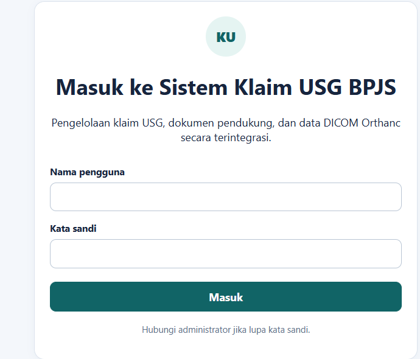
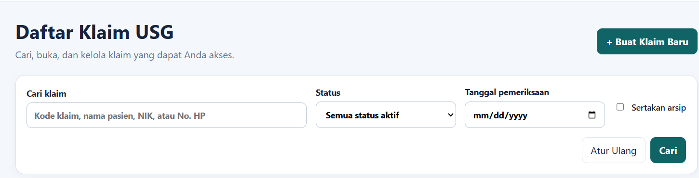
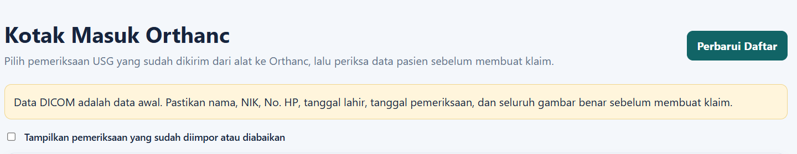
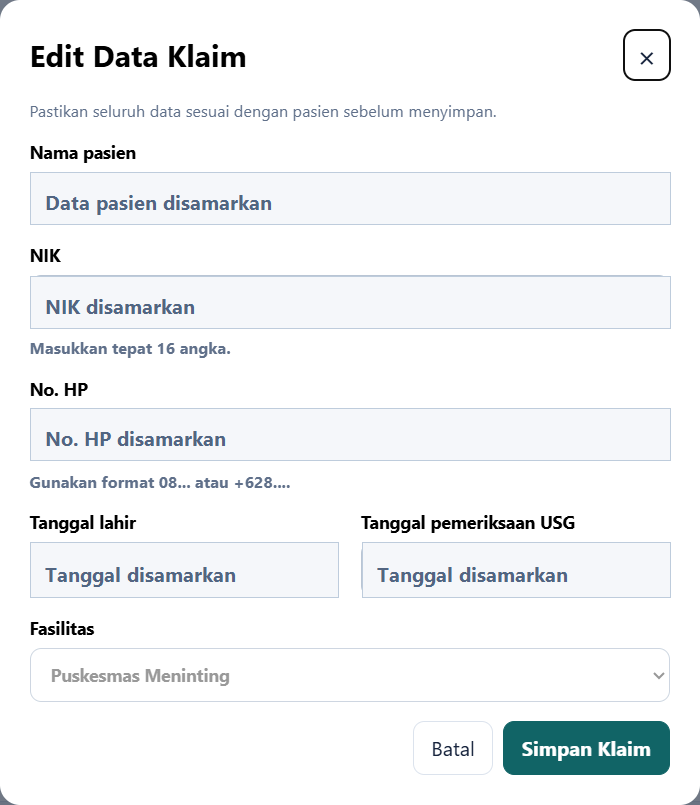
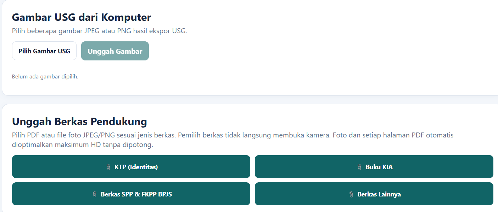
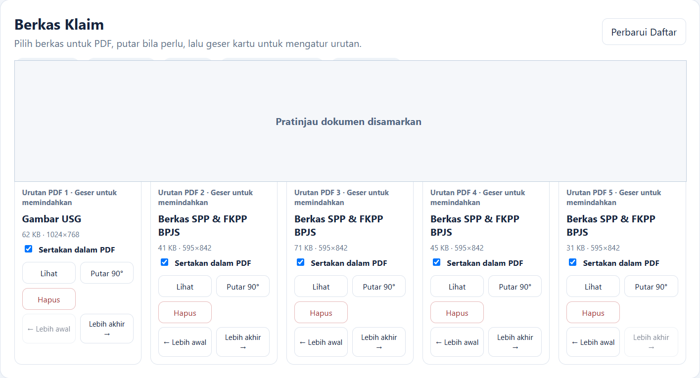
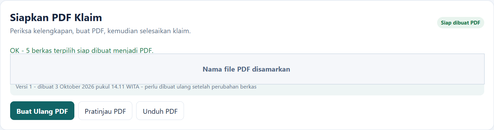

Panduan Ringkas untuk Petugas Klaim
Gunakan panduan ini untuk membuat klaim, melengkapi berkas, dan menghasilkan PDF klaim.
1. Masuk
- Buka alamat aplikasi berakhiran /exec yang diberikan administrator.
- Isi Nama pengguna dan Kata sandi, lalu pilih Masuk.
- Jika diminta, buat kata sandi baru. Jangan membagikan kata sandi.

2. Mulai klaim
A. Dari Orthanc
- Orthanc → Perbarui Daftar.
- Pada status Siap ditinjau, pilih Tinjau.
- Cocokkan nama, NIK 16 angka, No. HP, Nama Dokter, tanggal lahir, tanggal USG, fasilitas, dan semua gambar.
- Isi No. HP manual. ID pasien dari alat belum tentu NIK yang benar.
- Pilih gambar yang benar, centang konfirmasi, lalu Buat Klaim dari Orthanc.
Abaikan Pemeriksaan hanya untuk data uji, duplikat, atau pemeriksaan yang tidak digunakan.
B. Klaim baru manual
- Klaim → + Buat Klaim Baru.
- Isi nama, NIK 16 angka, No. HP (08... atau +628...), Nama Dokter, tanggal lahir, tanggal USG, dan fasilitas.
- Periksa kembali, lalu pilih Simpan Klaim.
- Jika status masih Draf, pilih Mulai Pengumpulan Berkas.



3. Lengkapi dan periksa berkas
- Jika gambar belum berasal dari Orthanc: Pilih Gambar USG → pilih JPEG/PNG → Unggah Gambar.
- Unggah dokumen melalui kategori yang sesuai: KTP, Buku KIA, SPP & FKPP BPJS, atau Berkas Lainnya.
- Pilih satu PDF atau foto JPEG/PNG dan tunggu pesan berhasil sebelum berkas berikutnya. Jika perlu, pilih Perbarui Daftar.
- Gunakan Lihat untuk memeriksa isi dan Putar 90° untuk memperbaiki arah.
- Centang Sertakan dalam PDF hanya untuk berkas yang akan dikirim.
- Atur urutan dengan menggeser kartu atau memakai Lebih awal / Lebih akhir.


4. Buat, periksa, dan selesaikan PDF
- Pastikan sedikitnya satu Gambar USG dipilih dan bagian Siapkan PDF Klaim menyatakan siap.
- Pilih Buat PDF atau Buat Ulang PDF.
- Periksa pasien, NIK, No. HP, Nama Dokter, tanggal USG, dan jumlah berkas. Centang konfirmasi pasien yang sama, lalu Ya, Buat PDF.
- Pilih Pratinjau PDF. Periksa setiap halaman: identitas, isi, arah, urutan, dan keterbacaan.
- Jika benar, pilih Unduh PDF, lalu Selesaikan Klaim.
Setelah klaim selesai, perubahan dikunci. Jika ada kesalahan setelah PDF dibuat, jangan gunakan PDF tersebut; hubungi administrator.

5. Arti status
| Status | Tindakan petugas |
|---|---|
| Draf | Periksa data, lalu mulai pengumpulan berkas. |
| Mengumpulkan berkas | Perbaiki data dan lengkapi berkas. |
| PDF dibuat | Pratinjau, unduh, lalu selesaikan jika sudah benar. |
| Selesai | Klaim terkunci dan pekerjaan selesai. |
| Diarsipkan | Hubungi administrator jika perlu dibuka kembali. |
6. Kendala umum
Klaim tidak ditemukan: cari dengan kode, nama, NIK, No. HP, Nama Dokter, status, atau tanggal USG.
Orthanc belum tampil: pilih Perbarui Daftar; jika tetap tidak ada atau gagal diterima, hubungi administrator.
Unggahan terasa berhenti: jangan langsung mengulang. Tunggu, perbarui daftar, lalu cek apakah berkas tersimpan.
Data/berkas salah: hentikan proses dan perbaiki sebelum membuat PDF. Jika terkunci, hubungi administrator.